File: 000030.gt.txt (if the image is defective, simply delete all Arabic text and the line will be excluded)
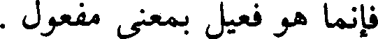
فإنما هو فعيل بمعنى مفعول .
File: 000031.gt.txt (if the image is defective, simply delete all Arabic text and the line will be excluded)
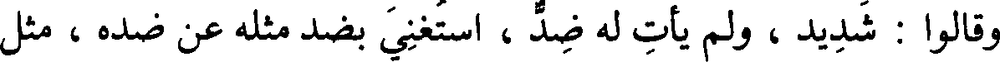
وقالوا : شديد ، ولم يأت له ضد ، استغنى بضد مثله عن ضده ، مثل
File: 000032.gt.txt (if the image is defective, simply delete all Arabic text and the line will be excluded)
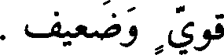
قوي وضعيف .
File: 000033.gt.txt (if the image is defective, simply delete all Arabic text and the line will be excluded)
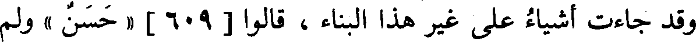
وقد جاءت أشياء على غير هذا البناء ، قالوا [609] « حسن » ولم
File: 000034.gt.txt (if the image is defective, simply delete all Arabic text and the line will be excluded)
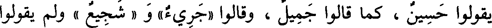
يقولوا حسين ، كما قالوا جميل ، وقالوا «جريء» و « شجيع » ولم يقولوا
File: 000035.gt.txt (if the image is defective, simply delete all Arabic text and the line will be excluded)
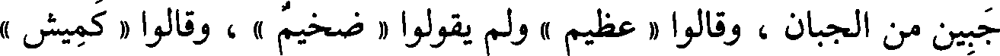
جبين من الجبان ، وقالوا « عظيم » ولم يقولوا « ضخيم » ، وقالوا « كميش »
File: 000036.gt.txt (if the image is defective, simply delete all Arabic text and the line will be excluded)
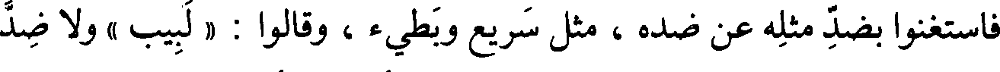
فاستغنوا بضد مثله عن ضده ، مثل سريع وبطيء ، وقالوا : « لبيب » ولا ضد
File: 000037.gt.txt (if the image is defective, simply delete all Arabic text and the line will be excluded)
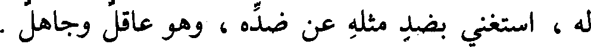
له ، استغنى بضد مثله عن ضده ، وهو عاقل وجاهل .
File: 000038.gt.txt (if the image is defective, simply delete all Arabic text and the line will be excluded)
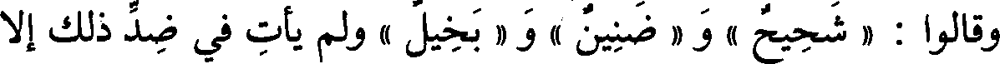
وقالوا : « شحيح » و « ضنين » و « بخيل » ولم يأت في ضد ذلك إلا
File: 000039.gt.txt (if the image is defective, simply delete all Arabic text and the line will be excluded)
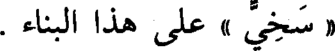
« سخي » على هذا البناء.
File: 000040.gt.txt (if the image is defective, simply delete all Arabic text and the line will be excluded)
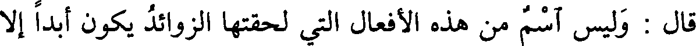
قال : وليس اسم من هذه الأفعال التي لحقتها الزوائد يكون أبدا إلا
File: 000041.gt.txt (if the image is defective, simply delete all Arabic text and the line will be excluded)
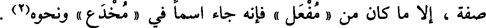
صفة ، إلا ما كان من « مفعل » فإنه جاء اسما في « مخدع » ونحوه(2) .
File: 000042.gt.txt (if the image is defective, simply delete all Arabic text and the line will be excluded)
باب شواذ البناء
File: 000043.gt.txt (if the image is defective, simply delete all Arabic text and the line will be excluded)
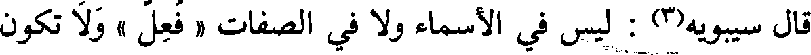
قال سيبويه(3) : ليس في الأسماء ولا في الصفات « فعل » ولا تكون
File: 000044.gt.txt (if the image is defective, simply delete all Arabic text and the line will be excluded)
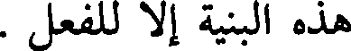
هذه البنية إلا للفعل .
File: 000045.gt.txt (if the image is defective, simply delete all Arabic text and the line will be excluded)
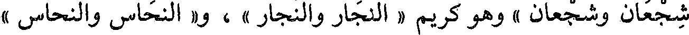
شجعان وشجعان » وهو كريم « النجار والنجار » ، و« النحاس والنحاس »
File: 000046.gt.txt (if the image is defective, simply delete all Arabic text and the line will be excluded)
أي : الأصل ، و« الصياح والصياح» و«صوان الثوب وصوانه » : التخت(1)
File: 000047.gt.txt (if the image is defective, simply delete all Arabic text and the line will be excluded)
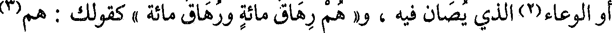
أو الوعاء(2) الذي يصان فيه ، و« هم رهاق مائة ورهاق مائة » كقولك : هم(3)
File: 000048.gt.txt (if the image is defective, simply delete all Arabic text and the line will be excluded)
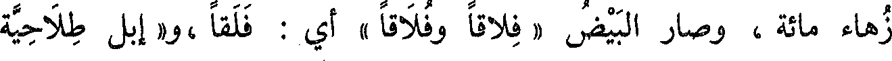
زهاء مائة، وصار البيض « فلاقا وفلاقا » أي : فلقا ،و« إبل طلاحية
File: 000049.gt.txt (if the image is defective, simply delete all Arabic text and the line will be excluded)
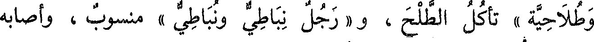
وطلاحية » تأكل الطلح ، و« رجل نباطي ونباطي » منسوب ، وأصابه
File: 000050.gt.txt (if the image is defective, simply delete all Arabic text and the line will be excluded)
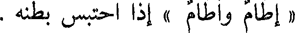
« إطام وأطام » إذا احتبس بطنه .
File: 000051.gt.txt (if the image is defective, simply delete all Arabic text and the line will be excluded)
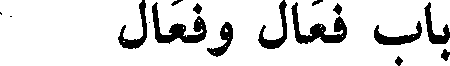
باب فعال وفعال
File: 000052.gt.txt (if the image is defective, simply delete all Arabic text and the line will be excluded)
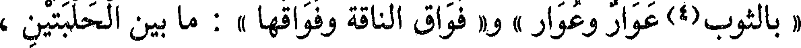
« بالثوب(4)عوار وعوار » و« فواق الناقة وفواقها » : ما بين الحلبتين ،
File: 000053.gt.txt (if the image is defective, simply delete all Arabic text and the line will be excluded)
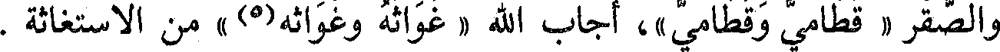
والصقر « قطامي وقطامي »، أجاب الله « غواثه وغواثه(5) » من الاستغاثة .
File: 000054.gt.txt (if the image is defective, simply delete all Arabic text and the line will be excluded)
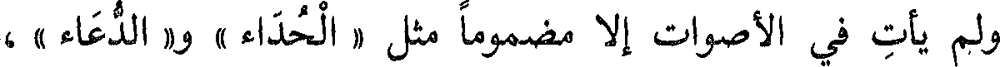
ولم يأت في الأصوات إلا مضموما مثل « الحداء » و« الدعاء » ،
File: 000055.gt.txt (if the image is defective, simply delete all Arabic text and the line will be excluded)
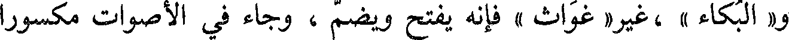
و« البكاء » ،غير« غواث » فإنه يفتح ويضم ، وجاء في الأصوات مكسورا
File: 000056.gt.txt (if the image is defective, simply delete all Arabic text and the line will be excluded)
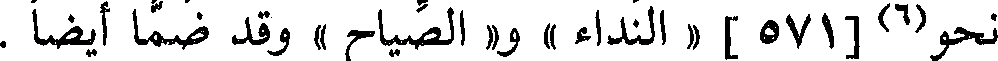
نحو(6)[571] « النداء » و« الصياح » وقد ضما أيضا .
File: 000057.gt.txt (if the image is defective, simply delete all Arabic text and the line will be excluded)
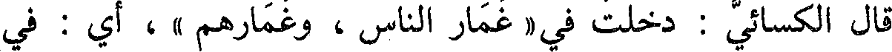
قال الكسائي : دخلت في « غمار الناس ، وغمارهم »، أي : في
File: 000058.gt.txt (if the image is defective, simply delete all Arabic text and the line will be excluded)
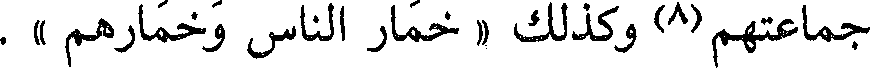
جماعتهم(8) وكذلك « خمار الناس وخمارهم » .
File: 000059.gt.txt (if the image is defective, simply delete all Arabic text and the line will be excluded)
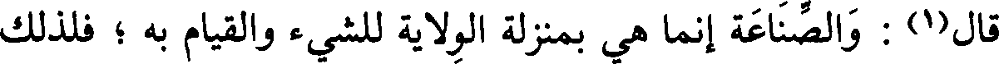
قال(1) : والصناعة إنما هي بمنزلة الولاية للشيء والقيام به ؛ فلذلك
To Save: `Ctrl+s`, make sure to choose `Webpage, complete`!